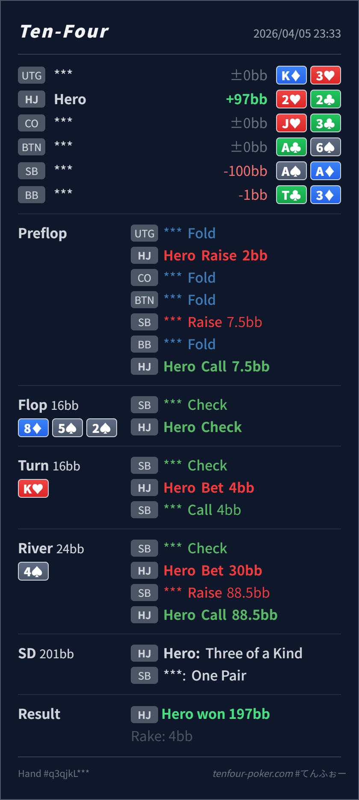

Preflop
良い22 は raw EQ は高くないですが、IP で set 価値があり size も重すぎません。
主論点は、3bet pot で bottom set を slowplay しすぎないことと、flush 完成 river で set をどの size に置くかです。当時の思考メモはないので、「相手が check したから slowplay したくなる」という仮定で見ます。結論は、preflop call は自然ですが、flop と turn は受け身で、river の overbet call もかなり際どいです。
2♥2♣8♦ 5♠ 2♠ / K♥ / 4♠3bet pot で相手が check したから slowplay したくなる という仮定でレビューします。2♥2♣2BB, SB 3bet 7.5BB, HJ call8♦ 5♠ 2♠ / K♥ / 4♠4BB, SB call30BB, SB raise 88.5BB, HJ call
良い22 は raw EQ は高くないですが、IP で set 価値があり size も重すぎません。
8♦ 5♠ 2♠改善余地大
Hero は bottom set で一気に上側です。2spade board なので今がもっとも取りやすいです。
K♥許容だが小さい
set は依然明確な value hand で、25%pot は少し小さすぎます。
4♠ベットは際どい / コールは理解可能
Hero の set は check range 全体にはまだ強い一方、raise range に対しては急落します。
| 論点 | その場で置きがちな見立て | どこがズレたか | 次回の基準 |
|---|---|---|---|
| flop の bottom set | 3bet pot で相手が check したので slowplay したくなる | 8♦ 5♠ 2♠ は overpair と spade draw が広く残る dynamic board で、今がいちばん広く value を取れる場面です。 | dynamic board の set は 守る より 今すぐ積む を先に考える |
| river の overbet | set はまだかなり強いので大きく打ち切りたくなる | 4♠ で flush が完成し、Hero は spade を持っていません。大サイズは raise を受けたときの形が悪く、value も薄くなります。 | river size は 自分が何に call されたいか と raise を受けたときの強さ で決める |
| ストリート | その時点の見え方 | 判断の焦点 | 評価 | 推奨 |
|---|---|---|---|---|
| Preflop | SB の 3bet は QQ+, AK, AQs, 一部 A5s などを含む強い range です。 | 22 は raw EQ は高くないですが、IP で set 価値があり size も重すぎません。 | 良い | ここは call でよいです。 |
Flop 8♦ 5♠ 2♠ | SB の check で AA-QQ, A♠x, AK/AQ, 一部 slowplay が広く残ります。 | Hero は bottom set で一気に上側です。2spade board なので今がもっとも取りやすいです。 | 改善余地大 | check より bet 寄りです。中サイズ以上で overpair と spade 系から取りたいです。 |
Turn K♥ | flop check-back 後の SB check で、AA, AK, AQs, Q♠J♠ などの continue 候補が残ります。 | set は依然明確な value hand で、25%pot は少し小さすぎます。 | 許容だが小さい | 60-80% 前後で pot を育てたいです。 |
River 4♠ | SB の check には A♠x, spade 完成、overpair with spade、まれな trap が含まれます。 | Hero の set は check range 全体にはまだ強い一方、raise range に対しては急落します。 | ベットは際どい / コールは理解可能 | GTO寄りには check back か、より慎重な value line が無難です。overbet 後の call は理解できますが、pool 相手には exploit fold もかなり有力です。 |
river で当てた/外した より、flop と turn で set の value を取り切れたか を先に見ると学びが大きいです。完成した相手 value に対してどこまで残れるか を意識すると size 選択が安定します。spade なし set は fold 寄りでも実戦EVが出やすいです。